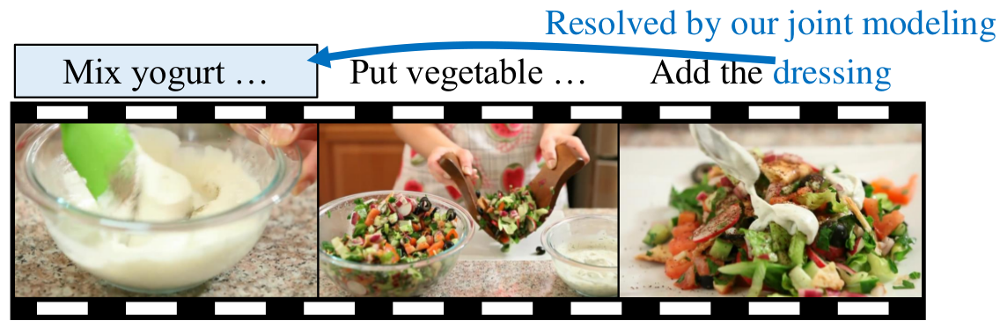
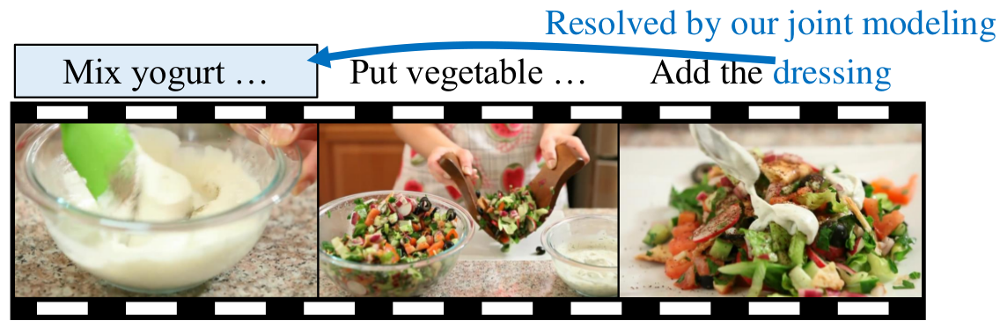

Yulan Guo
Assistant Professor
National University of Defense Technology
Research Fellow
Institute of Computing Technology, CAS
Email: yulan.guo@nudt.edu.cn
Assistant Professor
National University of Defense Technology
Research Fellow
Institute of Computing Technology, CAS
Email: yulan.guo@nudt.edu.cn

News and Events
Auguest 2016
My co-authored paper "Local Binary Features for Texture Classification: Taxonomy and Experimental Study" is now accepted by Pattern Recognition (PR).
July 1 2016
I received the CAAI Distinguished PhD Thesis Award from the Chinese Association for Artificial Intelligence. (CAAI).
Jun. 26 2016
I co-organized a tutorial "3D Keypoint Detection and Feature Description" in CVPR 2016.
May 2016
My co-authored paper "Rapid Localization and Extraction of Street Light Poles in Mobile LiDAR Point Clouds: A Supervoxels-based Approach" is now accepted by IEEE Transaction on Intelligent Transportation Systems (IEEE TITS).
Apr 2016
My co-authored paper "Median Robust Extended Local Binary Pattern for Texture Classification" is now accepted by IEEE Transaction on Image Processing (IEEE TIP).
Dec. 22 2015
I was granted the "NUDT Distinguished PhD Thesis" Award. (5 out of ~300)
Oct. 1 2015
My co-authored paper "A Two-Phase Weighted Collaborative Representation for 3D Partial Face Recognition with Single Sample" is now accepted by Pattern Recognition (PR).
Apr. 3 2015
My first-authored paper "A Comprehensive Performance Evaluation of 3D Local Feature Descriptors" is now accepted by International Journal of Computer Vision (IJCV).
Jan. 2015
My first-co-authored book chapter "Feature Selection for 2D and 3D Face Recognition" is now accepted for publication in Wiley Encyclopedia of Electrical and Electronics Engineering.
Brief Bio
Yulan Guo (Gary) is now working with Prof. Xilin Chen and Shiguang Shan as a Postdoc research fellow in the Institute of Computing Technology, Chinese Academy of Sciences. He is also an assistant professor at NUDT and an adjunct research fellow at the University of Western Australia (UWA). He received his PhD degree from NUDT in 2015. His research interests include computer vision and pattern recognition, particularly on 3D feature extraction, 3D modeling, 3D object recognition, and 3D face recognition. He is also interested in the applications of 3D comuputer vision theories in robotics, remote sensing, intelligent transportation, and ubiquitous computing.
[ResearchGate, Google Scholar， 中文]
[ResearchGate, Google Scholar， 中文]
Publications
2017

Persistence-based Interest Point Detector for 3D Non-Rigid Surface Description
12nd International Conference on Computer Graphics Theory and Applications (GRAPP), Proto, Portugal, 2017
2016
A Binary Descriptor for RGB-D Images Combining Appearance and Geometric Cues
3rd International Conference on Cognitive Systems and Information Processing (ICCSIP). Oct 19-23, Beijing, China, 2016, Oral
2015
2D and 3D Feature Selection for Face Recognition
Encyclopedia of Electrical and Electronics Engineering, Inc. 1-54, 2015. (Y. Guo and M. Bennamoun are co-first authors)
2014
2013

Persistence-based Interest Point Detector for 3D Non-Rigid Surface Description
12nd International Conference on Computer Graphics Theory and Applications (GRAPP), Proto, Portugal, 2017
A Binary Descriptor for RGB-D Images Combining Appearance and Geometric Cues
3rd International Conference on Cognitive Systems and Information Processing (ICCSIP). Oct 19-23, Beijing, China, 2016, Oral
2015
2D and 3D Feature Selection for Face Recognition
Encyclopedia of Electrical and Electronics Engineering, Inc. 1-54, 2015. (Y. Guo and M. Bennamoun are co-first authors)
2014
2013
2D and 3D Feature Selection for Face Recognition
Encyclopedia of Electrical and Electronics Engineering, Inc. 1-54, 2015. (Y. Guo and M. Bennamoun are co-first authors)
2013
Talks
3D Computer Vision: For Better Understanding of the Real World. The Summer School on Social Robotics, The University of Electronic Science and Technology of China, Chengdu, China. July, 2016. PDF
Tutorial on 3D Keypoint Detection and Feature Description. IEEE International Conference on Computer Vision and Pattern Recognition (CVPR), Las Vegas, US., 2016. PDF
Professional Activities
Program Committee: IJCAI 2017
Conference Reviewer: IJCAI 2017, CVPR 2016
Journal Reviewer: IJCV, IEEE TMM, IEEE CIM, IEEE TIT, IEEE JSTARS, IEEE SPL, IEEE RAL, IEEE GRSL, IET RSN, IET IP, PR, PRL, CVIU, NUECOM, SPIC, CAD, OExp, AO, OE, JEI, JARS, FCS
Awards & Honors
2016 National Postdoctoral Program for Innovative Talents 2016
2016 CAAI Distinguished PhD Thesis Award (9 in China)
2016 PLA Distinguished PhD Thesis Award (5 out of 300+)
2015 NUDT Distinguished PhD Thesis Award (5 out of 300+)
2014 NUDT Postgraduate Academic Innovation Star
2011 GuangHua Scholarship
2009 GuangHua Scholarship
2009 Excellent Postgraduate Innovation Fund
2011-2013 CSC Scholarship
2016 CAAI Distinguished PhD Thesis Award (9 in China)
2016 PLA Distinguished PhD Thesis Award (5 out of 300+)
2015 NUDT Distinguished PhD Thesis Award (5 out of 300+)
2014 NUDT Postgraduate Academic Innovation Star
2011 GuangHua Scholarship
2009 GuangHua Scholarship
2009 Excellent Postgraduate Innovation Fund
2011-2013 CSC Scholarship
Students (co-supervised)
San Zhang, now with Imperial College
Si Li, now with Google